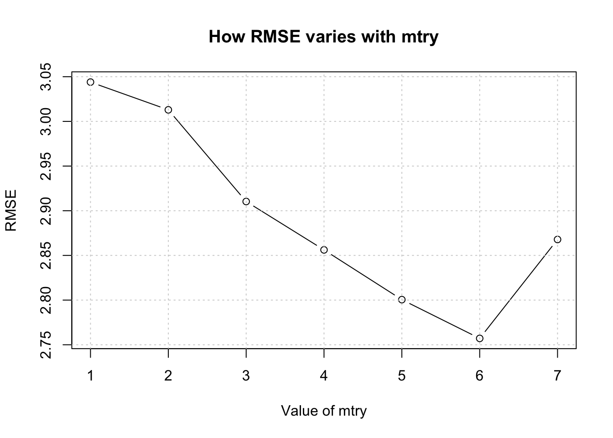
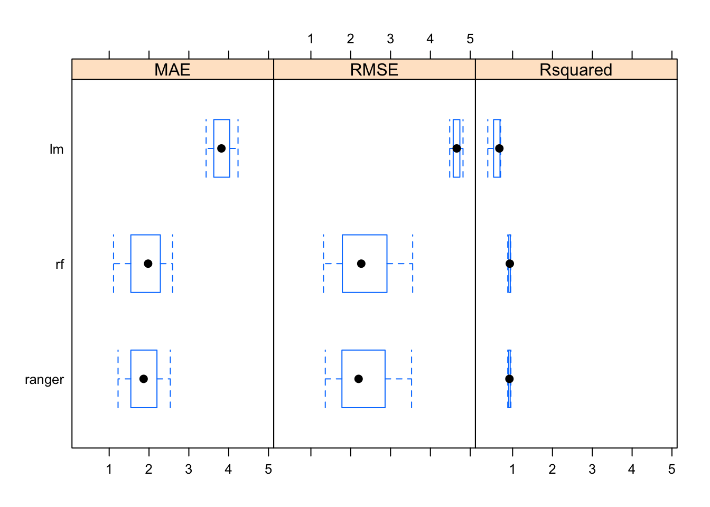
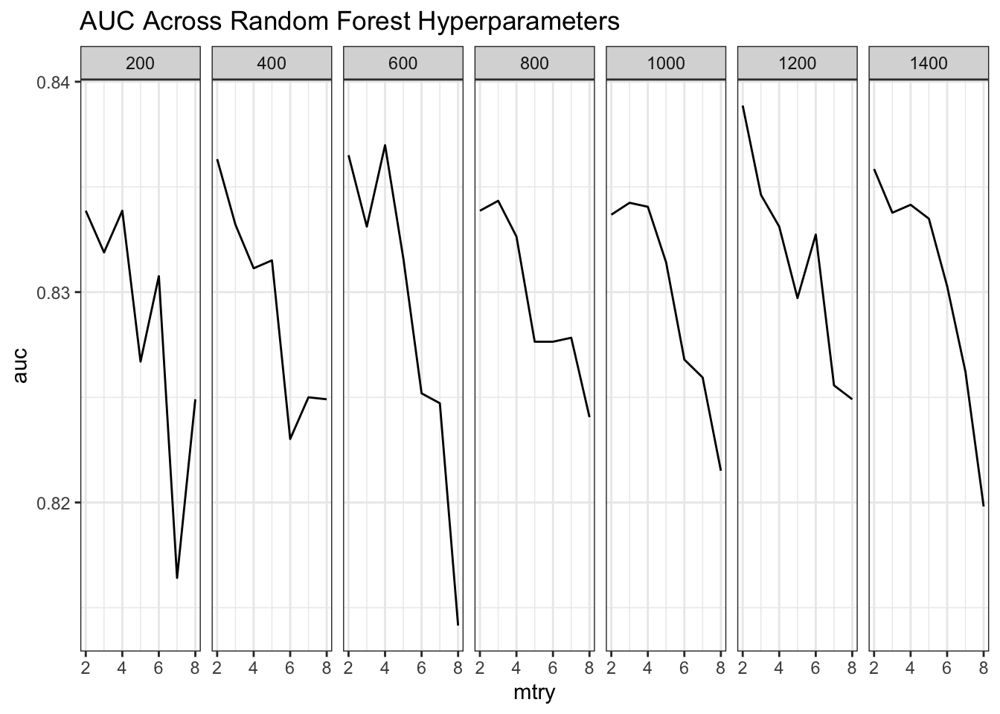
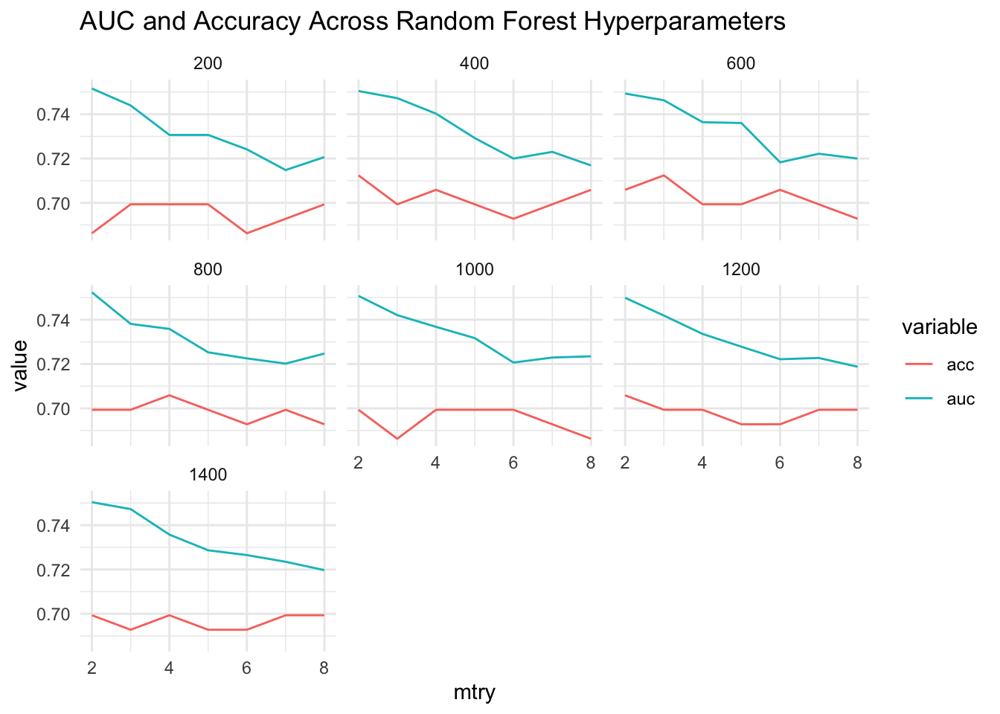
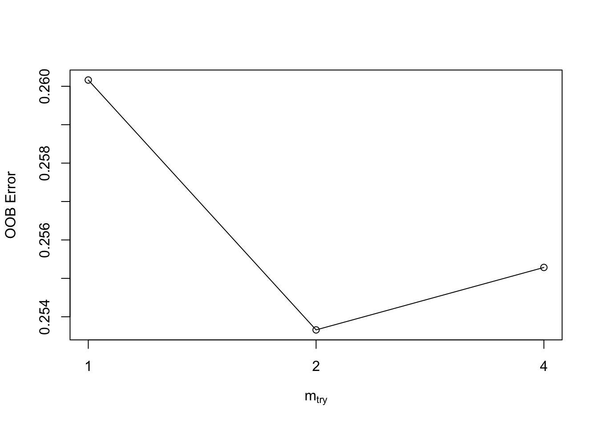

Chapter 9 Comparing Different Methods
We could look at random forests to see how they perfom. It also provides an opportunity to introduce the concept of hyperparameters which are important to consider since many ML methods will use them. Many people are surprised to learn that random Forests (or even a single Decision Tree) can be used to predict a numeric outcome, but they can be. The advantages of using random Forests include the following:
- easy to use
- resistant to overfitting
- accurate use for non linear modelsSome problems include:
- the rf function requires setting hyperparameters
- adjustment of hyperparameters can be specific to the data set
- default vlaues will requie adjustment or "tuning"For now, let’s set up a “shoot out” between the lm function and the rf function to see if the latter yields a lower RMSE than the former (or vice versa). You will do a lot of this when building different models. To do this would involve the normal steps of creating a train / test pair upon which to train and then test the model
control <- trainControl(method = "cv", number = 5)
new_idx <- createDataPartition(mtcars$mpg,p=.80,list=FALSE)
new_train <- mtcars[new_idx,]
new_test <- mtcars[-new_idx,]
set.seed(124)
caret_lm <- train(mpg ~ .,
data = new_train,
method = "lm",
trControl = control)
caret_lm$results## intercept RMSE Rsquared MAE RMSESD RsquaredSD MAESD
## 1 TRUE 4.948625 0.6866484 3.933441 1.403813 0.1635872 1.020206## [1] 3.473319The results of the lm function are pretty straightforward as are the predictions. So let’s see what the randomForest function will give us with the same data. Because we are using caret, all we have to is sub in the desired method which is rf.
control <- trainControl(method = "cv", number = 5)
set.seed(124)
caret_rf <- train(mpg ~ .,
data = new_train,
method = "rf",
metric="RMSE",
trControl = control)
caret_rf$results## mtry RMSE Rsquared MAE RMSESD RsquaredSD MAESD
## 1 2 2.826170 0.8989416 2.207659 0.4644599 0.10834759 0.2775814
## 2 6 2.783165 0.9046388 2.165585 0.4589975 0.08771376 0.3533151
## 3 10 2.864304 0.8934449 2.259031 0.4931883 0.08248623 0.3744303## [1] 2.793816So the Random Forest approach, in this case, produces a lower out of sample RMSE estimate for the test data frame. The larger question relates to why there is more information in the output for the rf model ? What is the mtry argument and why does it take on three different values during the execution of the function ?
## Random Forest
##
## 28 samples
## 10 predictors
##
## No pre-processing
## Resampling: Cross-Validated (5 fold)
## Summary of sample sizes: 23, 22, 23, 21, 23
## Resampling results across tuning parameters:
##
## mtry RMSE Rsquared MAE
## 2 2.826170 0.8989416 2.207659
## 6 2.783165 0.9046388 2.165585
## 10 2.864304 0.8934449 2.259031
##
## RMSE was used to select the optimal model using the smallest value.
## The final value used for the model was mtry = 6.The mtry argument is a hyperparameter which represents information that is supplied in the form of an argument prior to the call to the function. These parameters might not be something one can intelligently set without some experimentation. Here is some more specific information.
9.1 Parameters vs Hyperparameters
Model parameters are things that are generated as part of the modeling process. They are the product or result of model fitting. These might be things like slope and intercept from a linear model - or coefficients.
Hyperparameters have default values for various arguments but this does not mean that the defaults are appropriate for all cases.
So with rf there is a hyperarameter called mtry that influences the outcome but is not necessarily something that we know how to optimally set. The mtry value is the number of variables that are randomly sampled at each tree split.
To put this into perspective, if we had called the random Forest function without using caret we would have to supply a value for mtry or be prepared to accept whatever the default value is.
library(randomForest)
non_caret_rf <- randomForest(mpg~.,
data = new_train,
mtry = 3, # This is the default
importance = TRUE)
# Check out the RMSE of the preditcions
Metrics::rmse(new_test$mpg,predict(non_caret_rf,new_test))## [1] 2.995037This provides information corresponding to one value of mtry - in this case 3. To get an idea about how the model performs with other values of mtry we could write a function to accept this value as an argument. Our function will return the RMSE corresponding to the supplied value of mtry.
make_mtcars_rf <- function(mtry=3) {
my_rf <- randomForest(mpg~.,
data = new_train,
mtry = mtry,
importance = TRUE)
# Check out the predictions
rmse_rf <- Metrics::rmse(new_test$mpg,predict(my_rf,new_test))
return(rmse_rf)
}So now, the following example will call the randomForest package 5 times. Starting with the first iteration, the value of mtry will be 3, the next time it will be 4, and so on until the last iteration where it will be 8. This is just an experiment to see if varying mtry will help minimize the RMSE of our model.
We also have to be careful not to pick incorrect values for mtry so reading the help page for the randomForest package would be helpful. On the other hand, since mtry represents the number of features / variables to sample at each potential split, we know that it cannot practically exceed the total number of features in the data frame.
## [1] 3.043995 3.012927 2.910330 2.856176 2.800487 2.757118 2.867827## [1] 2.892694We could even create a plot of this information to simplify the selection of mtry corresponding to the lowest RMSE.
plot(1:length(total_rmse),total_rmse,type="b",
xlab = "Value of mtry",
ylab = "RMSE",
main = "How RMSE varies with mtry")
grid()
While this is fine what would happen if there were more than one hyperparameter. If we look closer at the documentation for randomForest then we see that there is a hyperparameter called ntree which is set by default to a value of 500. We could build that into our above function to see how that might impact RMSE performance. For example, we’ll work through values of mtry from 2,3,..8. For each of those values of mtry we will use values of ntree ranging from 300, 400, to 500. Let’s go ahead and do that. So let’s build a “grid” of values.
## mtry numoftrees
## 1 2 300
## 2 3 300
## 3 4 300
## 4 5 300
## 5 6 300
## 6 7 300
## 7 8 300
## 8 2 400
## 9 3 400
## 10 4 400
## 11 5 400
## 12 6 400
## 13 7 400
## 14 8 400
## 15 2 500
## 16 3 500
## 17 4 500
## 18 5 500
## 19 6 500
## 20 7 500
## 21 8 500We need to rewrite our function to handle this “training grid”. It’s not terribly difficult, just a bit tedious.
make_mtcars_rf <- function(grid=train_grid) {
retlist <- data.frame()
for (ii in 1:nrow(grid)) {
my_rf <- randomForest(mpg~.,
data = new_train,
mtry = grid[ii,]$mtry,
ntree = grid[ii,]$numoftrees,
importance = TRUE)
rmse_rf <- Metrics::rmse(new_test$mpg,predict(my_rf,new_test))
retlist <- rbind(retlist,c(grid[ii,]$mtry,grid[ii,]$numoftrees,
rmse_rf))
names(retlist) <- c("mtry","ntree","rmse")
}
# Check out the predictions
return(retlist)
}Now we’ll call this function and plot the output. It appears that values of mtry correspinding to the lowest RMSE range from 4,5 to 6 depending on the number of trees. The good news is that we now have a function that we could use with other training grids.
make_mtcars_rf() %>%
ggplot(aes(x=mtry,y=rmse)) +
geom_line() + facet_wrap(~ntree) +
ggtitle("Hyperparameter Experiment") + theme_bw()
The above is an example of what we would have to do if we didn’t have something like caret to help us try out different values of mtry or other parameters. As we saw from our earlier work, the model caret_rf tried three different values of the mtry hyperparameter without us even asking for it. It event tells us that the best value for mtry was 6 which corresponds to an RMSE of 2.37.
## Random Forest
##
## 28 samples
## 10 predictors
##
## No pre-processing
## Resampling: Cross-Validated (5 fold)
## Summary of sample sizes: 23, 22, 23, 21, 23
## Resampling results across tuning parameters:
##
## mtry RMSE Rsquared MAE
## 2 2.826170 0.8989416 2.207659
## 6 2.783165 0.9046388 2.165585
## 10 2.864304 0.8934449 2.259031
##
## RMSE was used to select the optimal model using the smallest value.
## The final value used for the model was mtry = 6.As a matter of fact we can plot this model with not a lot of effort and it will show us something interesting. In particular, we now see that using values less than 6 predictors / columns / features results in lower RMSE. If we use more, than the RMSE goes up. This is the power of methods that use hyperparamters. If we move through a number of values for the mtry then perhaps we can find the best value to get the best result.

Telling caret to use more values of mtry is possible. This will explicitly try all values from 1 - 9 inclusive. Note that the model gets built for each value of mtry. This causes the model building process to take longer than it normally would.
caret_rf <- train(mpg ~ .,
data = new_train,
method = "rf",
tuneLength = 9,
metric="RMSE")
caret_rf$results## mtry RMSE Rsquared MAE RMSESD RsquaredSD MAESD
## 1 2 2.645007 0.8173787 2.127978 0.5909299 0.09028811 0.5270631
## 2 3 2.608764 0.8202262 2.067913 0.5741900 0.08894928 0.5149476
## 3 4 2.577297 0.8234613 2.024369 0.5820523 0.09098721 0.5292862
## 4 5 2.583019 0.8221738 2.032098 0.5806554 0.09222528 0.5258939
## 5 6 2.621949 0.8166474 2.045854 0.5681828 0.09078944 0.5181458
## 6 7 2.621536 0.8163281 2.058502 0.5792789 0.09306434 0.5151865
## 7 8 2.633233 0.8131510 2.058988 0.5763685 0.09231452 0.5247132
## 8 9 2.669532 0.8085292 2.085607 0.5886447 0.09395219 0.5261378
## 9 10 2.693234 0.8043718 2.107377 0.5962539 0.09290693 0.5330753## [1] 2.955549It looks like a value of 4 will produce the lowest value for RMSE.

9.2 Hyperparameter Tuning
The process of finding the “right” values for these parameters is generally referred to as “hyperparameter tuning”. Different values are supplied for each invocation of a method (as we did in the above example) to see the effect on the model. We might do this many times to arrive at the optimal parameter set to produce a model that offers the “best” explanatory and predictive power.
Just to review - things like coefficients and residuals are parameters that are generated by a call to the lm function. They don’t actually exist until the function does some work. The hyperparameters are specific to whatever algorithm (and supporting R function) you are using. Concepts such as coefficients and intercept, however, are parameters that would be generated in this case by lm.
More generally, what if we wanted to use other functions to do some predicting ? You can check this page for a list of caret supported methods along with any hyperparamters available for tuning. Obviously, if you know the underlying method you can refer directly to the help page for it.
9.2.1 Multiple Hyperparameters ?
Let’s look at another method for random forests such as the ranger function which builds trees very rapidly. We can easily call it via the train function. If you consult the reference manual for the caret implementation of ranger you will see that it supports three hyperparameters: mtry, splitrule, and min.node.size.
control <- trainControl(method="cv",number=5)
caret_ranger <- train(mpg ~ .,
data = new_train,
method = "ranger",
trControl=control)
caret_ranger$results## mtry min.node.size splitrule RMSE Rsquared MAE RMSESD RsquaredSD MAESD
## 1 2 5 variance 2.384264 0.8760227 1.980939 0.7787123 0.09721958 0.6726328
## 2 2 5 extratrees 2.516712 0.8644741 2.028404 0.6539186 0.06120217 0.5130985
## 3 6 5 variance 2.248722 0.8675506 1.827276 0.9117314 0.12298558 0.7412615
## 4 6 5 extratrees 2.377334 0.8743410 1.946977 0.6681049 0.07227647 0.5408655
## 5 10 5 variance 2.313165 0.8616089 1.871325 1.0109850 0.13773205 0.7672811
## 6 10 5 extratrees 2.329986 0.8796529 1.910665 0.6766220 0.07399726 0.5196888## [1] 2.946618And then we can plot these results to get a more intuitive view of the output. What we see is that it sweeps through three values of mtry. for each of those it tries out a split rule of “variance” or “extratrees” and min.node.size of 5.

caret_ranger <- train(mpg ~ .,
data = new_train,
method = "ranger",
tuneLength = 5)
caret_ranger$results## mtry min.node.size splitrule RMSE Rsquared MAE RMSESD RsquaredSD MAESD
## 1 2 5 variance 2.872514 0.7917297 2.299322 0.5924495 0.09849207 0.5206793
## 2 2 5 extratrees 2.889869 0.8044215 2.342883 0.5846857 0.08669229 0.5029955
## 3 4 5 variance 2.786728 0.7912247 2.193220 0.5902493 0.10863209 0.5234092
## 4 4 5 extratrees 2.815848 0.8054706 2.284514 0.5583265 0.08518280 0.4879355
## 5 6 5 variance 2.777856 0.7887096 2.171504 0.5909759 0.10902703 0.5225292
## 6 6 5 extratrees 2.807257 0.8012692 2.270943 0.5400794 0.08769328 0.4675717
## 7 8 5 variance 2.772634 0.7898709 2.167048 0.6185698 0.10590349 0.5299540
## 8 8 5 extratrees 2.786335 0.8030323 2.261831 0.5409484 0.08740137 0.4676607
## 9 10 5 variance 2.793118 0.7849138 2.171663 0.6191209 0.10452620 0.5194213
## 10 10 5 extratrees 2.781364 0.8019250 2.257157 0.5406294 0.08866044 0.4597346## [1] 2.725053
9.2.2 Custom Tuning Grid
So it’s possible to go even deeper when tuning hyperparameters. We can create a custom tuning grid instead of letting caret pick the values. Of course, using tuneLength is fine but the custom tuning grid allows for finer grained control. It’s easy, all we need to do is to specify our own “tuneGrid” and then pass it to train.
MyGrid <- data.frame(
mtry = c(2, 4, 6),
splitrule = "variance",
min.node.size = 4
)
# Now we supply it when calling train
caret_ranger <- train(mpg ~ .,
data = new_train,
method = "ranger",
tuneGrid = MyGrid)
caret_ranger$results## mtry splitrule min.node.size RMSE Rsquared MAE RMSESD RsquaredSD MAESD
## 1 2 variance 4 2.771070 0.7814188 2.237454 0.5878971 0.09689102 0.4597547
## 2 4 variance 4 2.705529 0.7891168 2.176160 0.5938948 0.09411764 0.4602414
## 3 6 variance 4 2.700825 0.7856295 2.163197 0.5997924 0.09424665 0.4671776## [1] 2.7019669.3 Applied To Classification
We could extend this it deal with classification problems. We can adapt our randomForest function for use in predicting the Pima Indians diabetes outcome.
url <- "https://raw.githubusercontent.com/steviep42/bios534_spring_2020/master/data/pima.csv"
pm <- read.csv(url)We’ll implement the train / test pair
Next, we’ll build the model using the randomForest method
Then we’ll do the usual things of making some predictions and then look at an Accuracy and an AUC.
Compute the AUC:
## [,1]
## neg vs. pos 0.8357547Well, that was nice but how would we work in the search grid approach to see how this might be impacted by varying the hyper parameters ? We could start by picking parameters at random - as long as they are valid. mtry needs to be from 2 up to some number of features in the data set (this varies with the method) The number of trees should be somewhere between 100 and 1600.
set.seed(12)
mtry = sample(3:8,5)
ntrees = sample(200:1200,5)
my_grid <- data.frame()
for (ii in 1:length(mtry)) {
for (jj in 1:length(ntrees)) {
my_grid <- rbind(my_grid,c(mtry[ii],ntrees[jj]))
}
}
names(my_grid) <- c("mtry","numoftrees")
my_grid## mtry numoftrees
## 1 4 373
## 2 4 652
## 3 4 268
## 4 4 675
## 5 4 745
## 6 8 373
## 7 8 652
## 8 8 268
## 9 8 675
## 10 8 745
## 11 6 373
## 12 6 652
## 13 6 268
## 14 6 675
## 15 6 745
## 16 5 373
## 17 5 652
## 18 5 268
## 19 5 675
## 20 5 745
## 21 3 373
## 22 3 652
## 23 3 268
## 24 3 675
## 25 3 745So we could write a function to accept the combined set of randmoized parameters to see how it impacts performance:
make_diabetes_rf <- function(grid=train_grid) {
retlist <- data.frame()
for (ii in 1:nrow(grid)) {
my_rf <- randomForest(diabetes ~ . ,
data = rf_train,
mtry = grid[ii,]$mtry,
ntree = grid[ii,]$numoftrees,
importance = TRUE)
# Get the AUC
rf_probabilities <- predict(my_rf,rf_test,type="prob")
auc <- caTools::colAUC(rf_probabilities[,1],rf_test$diabetes)
# Get the Accuracy
rf_labels <- predict(my_rf,rf_test)
myt <- table(rf_labels,rf_test$diabetes)
acc <- sum(diag(myt))/sum(myt)
# Return a data frame with the information
retlist <- rbind(retlist,
c(grid[ii,]$mtry,grid[ii,]$numoftrees,auc,acc))
names(retlist) <- c("mtry","ntree","auc","acc")
}
#
return(retlist)
}Let’s see what we get back:
## mtry ntree auc acc
## 1 4 373 0.8311321 0.7581699
## 2 4 652 0.8353774 0.7516340
## 3 4 268 0.8266981 0.7450980
## 4 4 675 0.8314151 0.7516340
## 5 4 745 0.8339623 0.7385621
## 6 8 373 0.8145283 0.7385621
## 7 8 652 0.8220755 0.7385621
## 8 8 268 0.8208491 0.7320261
## 9 8 675 0.8233019 0.7254902
## 10 8 745 0.8248113 0.7320261
## 11 6 373 0.8297170 0.7254902
## 12 6 652 0.8257547 0.7254902
## 13 6 268 0.8235849 0.7124183
## 14 6 675 0.8315094 0.7320261
## 15 6 745 0.8305660 0.7254902
## 16 5 373 0.8311321 0.7450980
## 17 5 652 0.8309434 0.7450980
## 18 5 268 0.8300000 0.7385621
## 19 5 675 0.8275472 0.7320261
## 20 5 745 0.8339623 0.7516340
## 21 3 373 0.8283019 0.7385621
## 22 3 652 0.8343396 0.7450980
## 23 3 268 0.8319811 0.7581699
## 24 3 675 0.8358491 0.7581699
## 25 3 745 0.8317925 0.7516340So there isn’t a lot of variance in the outcomes although we didn’t know that previously which is why we performed the random search in the first place. If we wanted to, we could do something less random and more systematic by creating a predictable seqeucne of values for the hyperparameters which would result in a more granular search. In this example, we’ll also take advantage of a function called expand.grid which will help make the training grid. We could still use the above approach which uses for loops if we wanted to.
## mtry numoftrees
## 1 2 200
## 2 3 200
## 3 4 200
## 4 5 200
## 5 6 200
## 6 7 200
## 7 8 200
## 8 2 400
## 9 3 400
## 10 4 400
## 11 5 400
## 12 6 400
## 13 7 400
## 14 8 400
## 15 2 600
## 16 3 600
## 17 4 600
## 18 5 600
## 19 6 600
## 20 7 600
## 21 8 600
## 22 2 800
## 23 3 800
## 24 4 800
## 25 5 800
## 26 6 800
## 27 7 800
## 28 8 800
## 29 2 1000
## 30 3 1000
## 31 4 1000
## 32 5 1000
## 33 6 1000
## 34 7 1000
## 35 8 1000
## 36 2 1200
## 37 3 1200
## 38 4 1200
## 39 5 1200
## 40 6 1200
## 41 7 1200
## 42 8 1200
## 43 2 1400
## 44 3 1400
## 45 4 1400
## 46 5 1400
## 47 6 1400
## 48 7 1400
## 49 8 1400make_diabetes_rf <- function(grid=train_grid) {
retlist <- data.frame()
for (ii in 1:nrow(grid)) {
my_rf <- randomForest(diabetes ~ . ,
data = rf_train,
mtry = grid[ii,]$mtry,
ntree = grid[ii,]$numoftrees,
importance = TRUE)
# Get the AUC
rf_probabilities <- predict(my_rf,rf_test,type="prob")
auc <- caTools::colAUC(rf_probabilities[,1],rf_test$diabetes)
# Get the Accuracy
rf_labels <- predict(my_rf,rf_test)
myt <- table(rf_labels,rf_test$diabetes)
acc <- sum(diag(myt))/sum(myt)
# Return a data frame with the information
retlist <- rbind(retlist,
c(grid[ii,]$mtry,grid[ii,]$numoftrees,auc,acc))
names(retlist) <- c("mtry","ntree","auc","acc")
}
#
return(retlist)
}So we could look at how the AUC varies for the values of mtry and ntrees. What we will experience here is longer run times because the grid has more values than the one we made when using a random approach.
## [1] 25## [1] 49This plot will show us what is happening.
stats <- stats %>% mutate(ntree=factor(ntree))
ggplot(stats,aes(x=mtry,y=auc)) + geom_line() +
facet_grid(.~ntree) + theme_bw() +
ggtitle("AUC Across Random Forest Hyperparameters")
So what about the Accuracy ? It would be nice to see that on the graph also. There aren’t major variations in these metrics across these parameters. It depends on the method
# Reformat the stats data frame into long format
long_stats <- stats %>% gather(key="variable",value="value",-mtry,-ntree)
# Next, make the plot
ggplot(data=long_stats,
aes(x=mtry, y=value, colour=variable)) +
geom_line() + facet_wrap(~ntree) + theme_minimal() +
ggtitle("AUC and Accuracy Across Random Forest Hyperparameters")
There are other ways to do this as some functions have tuning methods associated with them to help address this issue. The randomForest function is one such function. There is the tuneRF function available. Let’s go back to a basic example:
So we could use the tuneRF function and pass it our X and Y variables along with some arguments to do a grid search with hyperparameters. The function itself will call the randomForest package:
X = rf_train[,1:8]
Y = rf_train[,9]
my_tune <- tuneRF(X,Y,mtryStart=2,ntreeTry=50,stepFactor=2,doBest=T)## mtry = 2 OOB error = 22.93%
## Searching left ...
## mtry = 1 OOB error = 26.18%
## -0.141844 0.05
## Searching right ...
## mtry = 4 OOB error = 23.9%
## -0.04255319 0.05
##
## Call:
## randomForest(x = x, y = y, mtry = res[which.min(res[, 2]), 1])
## Type of random forest: classification
## Number of trees: 500
## No. of variables tried at each split: 2
##
## OOB estimate of error rate: 23.74%
## Confusion matrix:
## neg pos class.error
## neg 345 55 0.1375000
## pos 91 124 0.42325589.4 Using Validation Data Sets
When building a model, we generate a training and test data set. We use the former to build a model and, if we are using something like the caret package, that process involves cross fold validation or bootstrap sampling to generate a good estimate for out-of-sample error. We then apply the model to the test data frame.
If we are using a method that has hyperparamters then maybe we want an intermediate data set to help validate our ultimate choice of hyperparameters. By taking this approach we can still keep our test data set off to the side for later use with the trained and validated model. Using this idea doesn’t require us to do much beyond generating a third data set.
The training set is used to build the classifier
The validation set is used to tune the algorithm hyperparameters repeatedly.
So there will be some overfitting here, but that is why there is another stage:
The test set must not be touched until the classifier is final to prevent
overfitting. It serves to estimate the true accuracy, if you would put the model
into production.# Simple into 3 sets.
idx <- sample(seq(1, 3), size = nrow(pm), replace = TRUE, prob = c(.8, .2, .2))
train <- pm[idx == 1,]
test <- pm[idx == 2,]
valid <- pm[idx == 3,]
#
nrow(train)## [1] 503## [1] 121## [1] 144Then we might build a model using the training data. We’ll use Accuracy as a metric.
control <- trainControl(method="cv",number=5)
set.seed(123)
train_rf <- train(diabetes~.,
data = train,
metric = "Accuracy",
method = "rf",
trControl = control)
train_rf## Random Forest
##
## 503 samples
## 8 predictor
## 2 classes: 'neg', 'pos'
##
## No pre-processing
## Resampling: Cross-Validated (5 fold)
## Summary of sample sizes: 402, 403, 402, 403, 402
## Resampling results across tuning parameters:
##
## mtry Accuracy Kappa
## 2 0.7633267 0.4497481
## 5 0.7593663 0.4476956
## 8 0.7513465 0.4315698
##
## Accuracy was used to select the optimal model using the largest value.
## The final value used for the model was mtry = 2.set.seed(123)
valid_rf <- train(diabetes~.,
data=valid,
metric="Accuracy",
method = "rf",
trControl = control)
valid_rf$bestTune## mtry
## 1 2# Now we would use the value of mtry to find an appropriate value
# of mtyry to use in the test data
set.seed(123)
test_rf <- train(diabetes~.,
data=test,
metric="Accuracy",
method = "rf",
trControl = trainControl(method="none"),
tuneGrid = data.frame(mtry = 5))
some_preds <- predict(test_rf,test)
confusionMatrix(table(preds=some_preds,actual=test$diabetes),positive="pos")## Confusion Matrix and Statistics
##
## actual
## preds neg pos
## neg 79 0
## pos 0 42
##
## Accuracy : 1
## 95% CI : (0.97, 1)
## No Information Rate : 0.6529
## P-Value [Acc > NIR] : < 2.2e-16
##
## Kappa : 1
##
## Mcnemar's Test P-Value : NA
##
## Sensitivity : 1.0000
## Specificity : 1.0000
## Pos Pred Value : 1.0000
## Neg Pred Value : 1.0000
## Prevalence : 0.3471
## Detection Rate : 0.3471
## Detection Prevalence : 0.3471
## Balanced Accuracy : 1.0000
##
## 'Positive' Class : pos
##